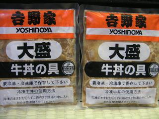

日々、想ふ
〜過去感じたことがつれづれと〜
（できるだけ最大化してお読みください）
一覧へ
山口の人。３/３１
一時的リッチマン、タケユキです。
学科内でのコース分けの結果が発表されてたんで
上の方に載せときました、
関係ある方は見とくと学校に確認に行く手間が省けます。
今日のバイトは忙しかった、レストランの方のことなんだけど。
けっこうお客さんが入っててドリンク作ってる時ちょっと事件が起きた。
宴会用の会場はアルファベットでテーブルが分けられてます。
「カシスオレンジ２つテーブルAにお願いします」みたいな感じに。
その時いろいろとドリンクの注文来てて
たくさん作らんといけんかったからちょっと焦ってて、
俺「これどこのテーブル？」
って聞いてたら、
バイトの子「ダーです」
一瞬聞き間違いかと思った。
後で聞いたら中学の時の先生で
ビー（B)とディー（D)を聞き間違えたりしないように
ディーの代わりにダーと発音する先生がいたそうだ。
どうやらその影響らしい。
間違いを避けるために「デー」と読む人はいるけども
「ダー」と言う人は初めて見た。
とまあその話はバイト終わってから聞いたわけだから、
その場ではめっちゃパニックだった。
「これどこのテーブル？」
「ダーです」
「えっどこ？」
「ダーです」
「？？？ダー？」
「エービーシーダーのダーです」
今日の感想：英語版猪木かと思った。
春、春、雨。３/３０
そろそろこたつを撤去しようかと、タケユキです。
いろいろどこか行きたかったんだけども
外はかなりの雨、最近天気が崩れてるのがけっこう気になる。
最近部屋の掃除をしてなかったんで
掃除をした。
でも途中でマンガ読んだりゲームやったりで
掃除する前より汚くなった。
明日こそは。
今日の一日；実家帰りたい病が再発。
無題。３/２９
今月は食費抑えていきたい、タケユキです。
来年度から今の大学の学科の中でさらに細かいコース
にわかれます。
そのコース分けの発表が今月下旬に掲示されるとのことだったので
一昨日くらいからちょくちょく学校に見に行ってます、
少し前にコースの希望をとったんだけどやっぱり結果が気になるし。
それで今日も見に行ったのにまだ掲示されてない。
もう今日は２９日、今月下旬ってより今月末だろうが。
そんなことやバイトで怒られまくったりあんまいいことなかった。
明日はいい日になりますように。
今日のよかったこと：スーパーで１０％引きクーポン券が使えた。
解けぬ謎。３/２８
今日もバイト行ってきました、タケユキです。
なんか今日は理不尽に怒られる事が多かった。
バイトの先輩もなんかひどいこと言われたらしく
「毎日こんなんやったら三ヶ月後には俺ここおらんわ」
って言ってた。忍耐力あるなって思った。
毎日今日みたいに理不尽に怒られたら
俺だったらあと三日でやめますって言うと思う。
とりあえず今日の不満はこんな感じだ。
あと今日一つ理解不能なことが起きた。
ちょくちょく怒られるけどタダでまかないが
出るってのはやっぱりおいしい。
まかないってのはたいていのところが食材の余りとかで作るって話を聞いた。
今日のまかないはカレーだった。
飲食店でバイトしてておかないがカレーってのを聞いただけだと
別に理解不能じゃないんだけど、
問題なのはバイト先のレストランは
創作中華料理を銘打っていることだ。
今日の謎：なぜ中華料理屋にカレー粉が。
微妙な関係。３/２７
やりにくい、タケユキです。
なにがやりにくいかっていうと、レストランのバイト。
今までと何かやることが変わったとか、
そういうのじゃないんだけど、
年上のバイトの人が入ってきた。
今までも一個上とか二個上くらいの人はいたんだけど
今回は参った、２８歳と３６歳。
年上の人なのに立場的にはこちらが先輩、
要するにバイト中は「これここに置いといていいですか？」
とかそんな風に言われるわけ。
今までそんな経験ありません。
まあ年がけっこういってても雰囲気若かったら
やっていけるんだろうけども、
これが残念なことに若いか老けてるかどっちかって言ったら、
「・・お父さん？」
とか「・・高校の時の担任？」みたいな感じだ。
そんな人に敬語丁寧語使われるのは違和感がこれでもかってある。
これから当分バイトが憂鬱になりそうだ。
今日の休憩時間：何を話せばいいかわからない。
love me slowly（３/１７）。３/２６
帰省五日目、タケユキです。
この日も広島へ行きました、でもこの日は今までと違うんです。
帰省初日にヘタレを連呼されるきっかけとなった
飲み会で一言も話せなかったっていう
人と遊ぶ予定だったからです。
この日のために帰省したようなもの、
今年のバレンタインには手作りチョコもあげた人、
緊張するなというのが無理だというもの。
いやまあ別に緊張はしなかったんだけども。
ボーリング行って、帰省中最高スコアの１２４をたたき出した。
正確には転がして出したんだけど。
どうやら本番には多少強い体質らしい。
広島のラウンドワンでUFOキャッチャーやって
くまのプーさんのぬいぐるみをゲットした。
そしたら横にいた店員さんが腰に装備してる
パフパフとベル手に持って、
パフパフカランカラン！「プーさんゲットです！！」
ってやられた。これにはまいった。おもしろかったけど。
それから
「ブラザーベア」見たり
今月初めに広島に新しくできたロフトに行った。
広島のロフトは梅田とかにあるロフトとは違って
デパートのワンフロアだけがロフト。
これはおもしろかった（たぶん関西人には分かる）。
広島人はそごうの８階だけ東急ハンズだと
想像すると面白さが分かります。
少し話は変わるんだけどどうやら
俺は人に尽くすタイプの人間らしく、
今回の帰省、ほとんどの人にお土産買って帰らなかったんだけど
この人には
お土産３つ買って帰ってた。
お土産を選ぶ楽しみってすごいって思った（なら他の人にも買って帰れ）
そして次の日広島に別れを告げました。
そんな感じでいろいろあった帰省について書いたこの話、
何が言いたかったかっていうと、
めっちゃ楽しかったと、そういうことでした。
おまけ：実家の近くのJR、電車の中に
整理券取る機械が設置されてた。
今日のおまけ：
無人駅で乗り降りする人用に設置されてるらしい。
トンポーロー（３/１６）。３/２５
帰省四日目（その２）、タケユキです。
因縁の地、広島そごうレストラン街に到着。
どういう因縁なのかっていうとあれは数年前のある日、
同じメンバーで今日のように広島に行った日、
そごうのレストラン街の中のラーメン屋に入った。
メニューを見てる時に、ある一人が自慢げにこういった、
「おいお前ら知ってるか、
メニューの中にある豚角煮ってあるじゃろ、
これってちゃんとした読み方は『トンポーロー』
って読むんよ、
だから『豚角煮麺』は『
トンポーローメン』って言うんだって」
かなりの自慢げだったけども
俺と他の友達は「ほんとか〜？」みたいな目をしてた。
信じてもらえないその友達は、
「なら俺がトンポーローメン頼んでやるよ、ちゃんと見
とけよ」
他の人も頼むものが決まったので店員さんを呼ぶ、
「ご注文のほうお伺いします」
「えっと、チャーシューメンで」
「俺もチャーシューメン」
「トンポーローメン」
「は？」
通じてねえじゃん、これには俺ら笑いをこらえるのに必死。
でもこりずにその友達はがんばり続けた、
「えっと・・トンポーローメン」
「え？」
しかし二度も「なんだそれ？」みたいな返事を返されたら
さすがにその友達もたじろいだ、
「あの・・豚の・・角煮・・」
「ああ、はい。では少々お待ちください」
さがっていく店員さん、大きくなる笑い声、真っ赤になった友達。
もうおもしろくてたまらなかった。
だが彼の悲劇はここで終わらない。
彼は「あの店員は中華料理店の店員としてなってない」って
不満をもらしてから十分後、料理が届く。
チャーシューメン２つと豚の角煮。
最後の一言の「豚の角煮」だけで肝心の麺が通じてなかったようだ。
昼飯を食べにきたお客、
みんなラーメンを頼む中
一人豚の角煮のみを頼む男。
店員にはさぞ奇異なお客に見えただろう。
っていうこの話が因縁ってやつ。
あとあと調べたら本当に「豚の角煮」は「トンポーロー」って言うらしい。
それで恥をかかされた友達がリベンジを果たすべく
この日同じ店に向かったのである。
お店やってなかった。
今日の一言：また手が荒れてきた。
一年振り（３/１６）。３/２４
帰省四日目（その１）、タケユキです。
この日は朝から広島に行った（帰省した時の話での「広島」は「広島市」を指します）。
卒業以来一年ぶりに会う友達達と遊ぶ予定だった。
１１時、集合場所の駅前の噴水のところに到着。
辺りを見回す、まだ他の人は来てないみたいなのでいったんトイレへ。
数分後、噴水前に戻る。再度辺りを見回すと、
友達っぽいのが少し向こうに立ってた。
でも本人かどうか少し自信がない、
なにせ一年も会ってないんだから。
本人みたいな気もするし、そうでない気もする。
ただ似てるだけかと思ってたら
どうやら相手も少しこっちを気にしてるみたいだ。
警戒心を持ちながら近づく、一歩、二歩・・。
相手との距離２ｍ
にしてやっと本人のオーラが出てることに気付く。
「やっぱりお前か」
「おう俺だ」
こんな感じで
一年振りの再会を果たす。
よくよく見ると
全然変わってなかった。
一年やそこらでは人ってのはあんまり変わらんもんだ。
全員集まったところで出発、帰省して二回目のボーリングを楽しむ。
結果は聞くな。
どうやら俺はスペア出した後はもれなくガーターか１本しか倒せな
いようだ。
それただ１０本倒しただけじゃねえか、と。
スペアの意味ないんじゃんか、と。
でも多少ボーリングに慣れてきた感じもあったので満足しながら
ボーリング場を後にした。
それから因縁の地、広島そごうレストラン街へ向かった。
今日の話：因縁については明日に続きます。
愛郷心（３/１４、５）。３/２３
帰省二日目、三日目の話です、タケユキです。
広島最初の朝を
をいつものごとく
３丁目１１の１宅で迎え、
朝食もごちそうになる。
それから車で駅まで送ってもらい、実家に。
帰省やらなんやらで疲れてたためこの日は睡眠に費やされる。
帰省三日目、この日は予定がなかったんで
久しぶりに近所の周りを歩いてみることにした。
ほんとはチャリで買い物に行こうと思ったら
自分のチャリにカギがかかっててそのカギがどこにあるか分からず
歩かざるを得なかっただけなんだけども。
同じ高校の人にはある種有名だとは思うけど、
実家は竹原市っていう瀬戸内海に面した人口３万人ちょっとの
小さな町にある。
家から一番近くのコンビニまで徒歩３０分、
早い話が田舎なわけです。
そんなんだから本買いに行くのもちょっとした冒険。
家を出て歩くこと１０数分、まだ冬を思わせる風景が道路沿いに
広がる。

って辺り一面こんなのではない、そこまで田舎じゃない。
大分暖かくなってきてるのに
まだ冬の名残りがと思っていたら、
春もすぐそこにきてた。


久しぶりに歩く地元の町並み、
生まれてから１８年間ずっとこの町に住んでたわけだけど
この風景は変わってない。
町並みもそんなに変化なかった。
田舎から出て一人暮らしを始めて帰省するたび気になるのが
帰るたびに町がさびれてくんじゃないかってことだ。
さびれるにしろ、栄えるにしろ、
長年過ごした場所が自分の知らない姿に変わっていくことに
少し寂しさを感じてるんだと思った。
大学生になってからこういう年寄りじみた思いが頻繁に出てくる、
俺はまだティーンエイジャーでいたいのに
（あと一ヶ月くらいで終わります）。
年末に帰省した時は何件かお店が潰れてたけど
今回はすき屋ができて、靴屋が本屋になってた。
地元に帰れる時にはできるだけ帰ってこようと思った一日だった。
ちなみに実家のある竹原市、なんで竹原って言うかというと


たぶんそこらへんに竹が生えてるからだと思う。
別にそこまで竹がたくさん生えてるわけじゃないけど
他と比べたらやっぱりたくさん生えてるんだろう。
そのせいで
３丁目１１の１に、
「このバンブースメル！バンブースメル！」ってよく言われたのも一つの想ひ出だったりします。
俺は竹のにおいなんかしない。
今日のいじめ：今回の帰省の時にも言われた。
３月１３日の想ひ出。３/２２
今日から帰省した時の話をちらほらと、タケユキです。
帰省当日、午前９時起床。
高校の友達（以下アレックス）と
大阪駅１１時発の電車で広島に帰る予定でした。
てなわけでアレックスとは１０時半に大阪駅集合っ
て話になってた。
普段と違い帰省するわけだから家から駅までは徒歩、
それも考慮に入れていつもより時間に余裕を持って出発。
ちょうどそのころアレックスからメールが届く、
「やばい、電車今さっき出た」
大阪駅に来るまでの地下鉄で乗り換えがうまくいかなったらしい。
１０時半、俺は予定通り大阪駅到着。
アレックスはまだか
と少し待つ。
電車出発まであと１５分、ケータイにメールが届く、
「やばい、間に合わんかも」
おいおい勘弁しろよと思いながら先に切符を購入。
普通は電車は１１時発以外にも何本もあるから
別にそんなに急がんでもいいと思うだろうけど、
乗り換えの都合とか夕方から用事あったからこれに
乗り遅れたら大変なわけだ。
大阪駅は改札が東口、中央口、西口と三ヶ所あって
地下鉄から一番近い東口にてアレックスを待つ。
電車発車まであと５分、ケータイが鳴る。
アレックス「もしもし、今大阪駅着いた」
タケユキ「おう、それで今どこよ？」
アレックス「えっと、中央口」おい。
めっちゃ焦りながらケータイ片手に中央口へ走る。
３分前、中央口に到着。
タケユキ「もしもし、中央口着いたで」
アレックス「改札のとこにおる」
改札の周りは人が多すぎて全然分からない。
タケユキ「キヨスクのとこ来いよ」
その時には気付かなかったけど、
中央口にキヨスク２ヶ所あるんだった。
ここでも合流できず。
その後やっと切符売り場で合流、
この時電車発車まであと２分。
必死でホームに駆け上ってなんとか間に合う、
ギリギリセーフってやつだ。
それからアレックスに文句を言いながら電車で５時間、
広島へ。
大学生になってから電車でばっかり帰省してた（一部
例外あり）、だけど
だんだんと見覚えのある景色が見えてくるのは
やっぱりいいものだったりする。
それから駅に迎えに来てた
３丁目１１の１の車に乗り込み
ボーリングへ。
当分やってなかったけど所詮は玉転がし、スコア１００は行くだろう
と
甘く見てたら１ゲーム目、
スコア７６。
痛い、果てしなく痛い。
まあ久しぶりでこんなスコアなんだろうと、
「よっしゃ、次のゲームから本気で行こう」大した実力もない、そんでもって負けず嫌いな人間が
吐く台詞を吐いた後、
２ゲーム目、
スコア７７。
このレベルの低さはなんだ、７６、７７と
この無駄な安定感はなんだ。
果てしなく悔しかったがずっと悔しがってるわけにも行かず
それから
３丁目１１の１と別れ、
夕方からの飲み会会場の笑笑へ行った。
この飲み会のメンバーは高校の時の同じクラスの人達。
３年間も高校生活をしていたら一人や二人、
「身近なアイドル」みたいな存在はいるもんだ、たぶん。
そんな人が飲み会に来てたら当然狙う、隣の席を。
狙ってたわけです、隣の席を。
かなりの気合いとともに店に入ったわけですが、
すでに隣にはもう人が。
スタートダッシュには失敗したが、
諦めだけは悪い男。
話しかけるチャンスを狙っては諦め、狙っては諦め、
一時間経過。
久しぶりに会った人は他にもおるからその人たちととりあえず
騒ぐ。
飲み会が終盤になっても隣の人が動く気配がない。
だんだん話しかけられないせつなさが苛立ちに変わる。
こうなってきたらもう俺の内心不機嫌ぷりは止まらない。
ようするに「もういいよ、けっ」みたいなことである。
話しかけようという気持ちはどこかへ吹っ飛び他の人と飲んでた。
結局その人と一言も話さず飲み会は終了。
飲み会終わって
３丁目１１の１の家へ。
飲み会でのことを報告するやいやな
「このヘタレ！」を連呼され、
さらにはウイニングイレブンで大敗を喫した。
（リベンジを誓い、後日ウイイレ７を購入するきっかけとなる。）
そんな感じでもうこれぞ踏んだり蹴ったりの一日を終える。
電車の乗り換え失敗したアレックスが「俺今日厄日だ」って言ってたが
たぶん俺の方がもっと厄日だったと思う。
今日の続き：たぶん明日に続きます。
忙。３/２１
このHP、高校の時の塾の先生も見てるみたいだ、
メールもらってうれしさ５０％、懐かしさ４５％、
「・・悪口とか書いたりしてなかったよな？」が５％、タケユキです。
高校時代は天才肌を思わせるほどの優等生だったから
たぶん大丈夫。
バイト先のレストラン、今日は結婚式たくさんありました。
いくら大安だからってその日に式
挙げりゃいいってもんじゃないっての。
でもそういうのを重要視する人ってのはけっこう多く、
逆に仏滅とかあまり縁起がよくないであろう日は
それを理由に料金が安くなったりします。
大安だろうが仏滅だろうが一日は一日、
その日がどちらであれ二人にとって特別な
日でなることは変わらないのなら
わざわざ大安に結婚する必要はないって言いたい。
大安でもない普通の日に結婚して
二人だけの記念日にしてしまえばいいのに。
要するに俺の言いたいことはみんな同じ日に結婚すんじゃねえって話だ。
泣きそうなくらい忙しくても、多少気を抜けそうな忙しさでも
時給は変わらないってことだ。
今日の一言：でもどうせなら俺は大安の日に結婚したい。
眠。３/２０
今一番欲しいもの、ヴィトンの財布です、タケユキです。
そのために今月分の給料はもう全部使い道決まってます。
だから働かなければならないのです。
家に帰ってきたのは日付が変わってからだった。
明日は１１時からバイトなので朝早く起きねばなりません。
帰省した時の話書きたいんだけども。
それにまだこの話に出てくる人達に登場の許可をもらってないし。
許可はまあいっか☆
明日か明後日には書きたいと思います。
今日の一言：書きたいという意思があることが伝わればいいや。
帰宅。３/１９
昨日帰って来ました、タケユキです。
でも昨日は大阪じゃなくて京都に泊まった。
電車で数時間かけ大阪駅に着いたころに京都の友達から
「助けに来てくれ」みたいなメールが来たんでそのまま京都へ。
話を聞いてみたらウイルスにやられてパソコンのデータ全消去だとか。
それでOSの再インストールとか何やら手伝いに行った。
でも
実際やってるのは本人だけで俺は横で酒飲みながらラーメン食って寝てた。
夜に京都の町をチャリ借りてうろうろもしてみた。
京都って古風なイメージ満開だったのになぜかカフェがいっぱいあった。
最近カフェ巡りにはまってたので京都に住みたくなった、
俺はコーヒー飲まないけど。
今回の帰省はけっこういろいろあったんで
時間ある時にその話もまた書こうかなって思ってます。
今日の画像：実家に冷凍の吉野家の牛丼があった。

食った、うまかった。
実家に帰ってたのでこの期間お休み。。３/１４〜１８
とまあそんなわけです、タケユキでした。